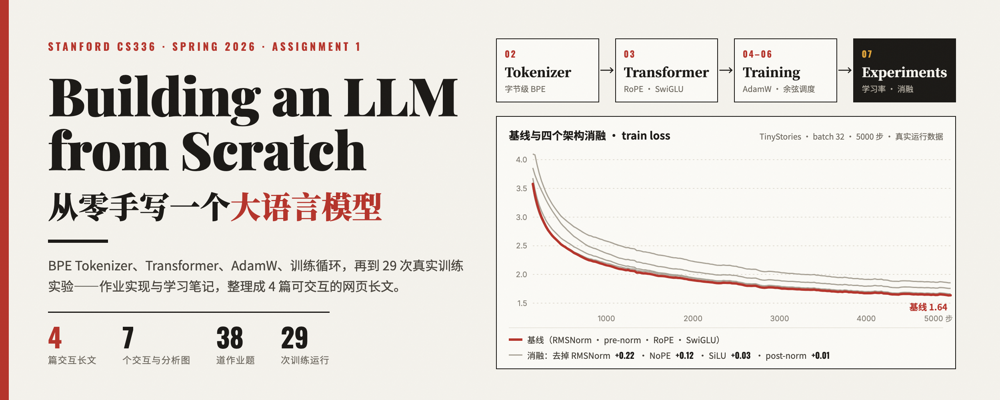

BPE Tokenizer、Transformer、AdamW、训练循环、29 次实验——作业实现与学习笔记，整理成 4 篇可交互的网页长文。双击即读，离线可用。
训练"按频次产生规则"，编码"按 rank 应用规则"；BPE 合并步进可视化，与 GPT-2 tiktoken 逐 token 一致。
CHAPTER 3einsum 手搭 RMSNorm / RoPE / SwiGLU / 因果注意力，FLOPs 核算器算清每一份开销。
CHAPTER 4–6交叉熵的数值稳定、AdamW 逐行对照 Algorithm 1、余弦调度与生成解码；含"梯度裁剪从未生效"的校注。
CHAPTER 729 次训练运行：学习率、batch size、四个架构消融；先量噪声地板，再下结论。
